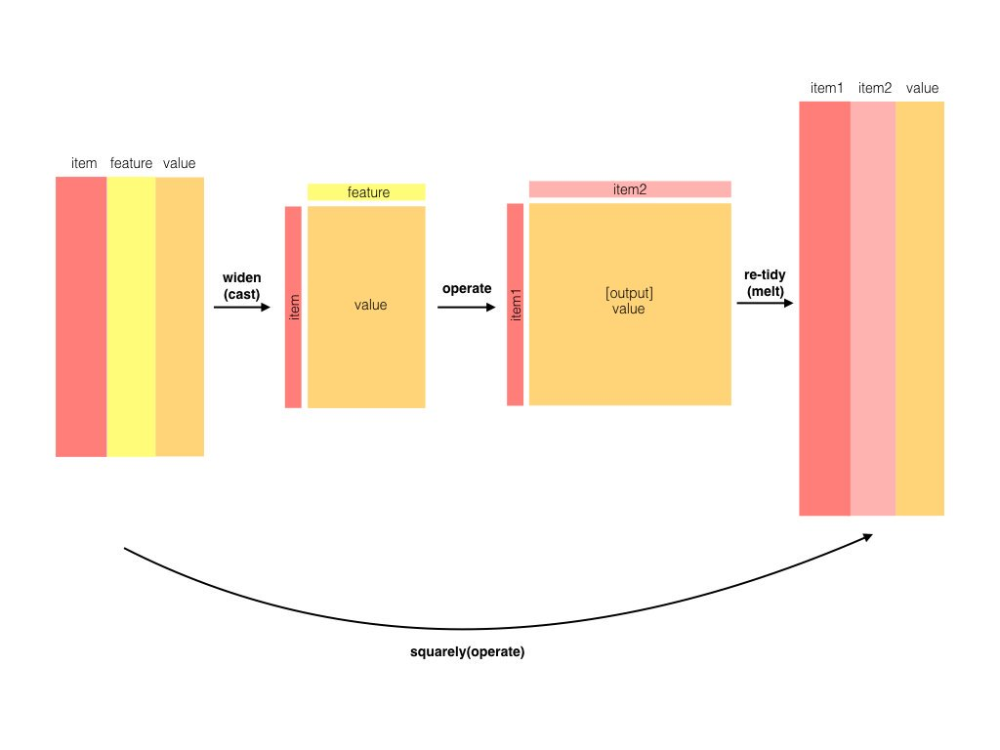
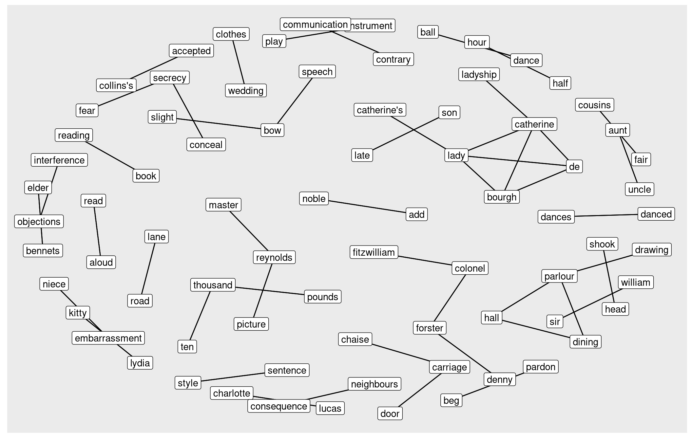

# A tibble: 9 × 2
person1 person2
<chr> <chr>
1 alice bob
2 charles bob
3 david bob
4 bob allen
5 fiona bob
6 gary bob
7 bob henry
8 alice allen
9 david fiona
let’s convert this dataframe to a graph/network
friends_g <- friends |>as_tbl_graph()friends_g
# A tbl_graph: 8 nodes and 9 edges
#
# A directed acyclic simple graph with 1 component
#
# Node Data: 8 × 1 (active)
name
<chr>
1 alice
2 charles
3 david
4 bob
5 fiona
6 gary
7 allen
8 henry
#
# Edge Data: 9 × 2
from to
<int> <int>
1 1 4
2 2 4
3 3 4
# ℹ 6 more rows
Let’s calculate degrees. Notice that “bob” is followed by 5 people, “bob” follows 2 people (total degree 7)
friends_g |>mutate(deg =centrality_degree())
# A tbl_graph: 8 nodes and 9 edges
#
# A directed acyclic simple graph with 1 component
#
# Node Data: 8 × 2 (active)
name deg
<chr> <dbl>
1 alice 2
2 charles 1
3 david 2
4 bob 2
5 fiona 1
6 gary 1
7 allen 0
8 henry 0
#
# Edge Data: 9 × 2
from to
<int> <int>
1 1 4
2 2 4
3 3 4
# ℹ 6 more rows
result <- friends_g |>mutate(deg =centrality_degree(mode="all")) |># calculate degree for nodesfilter(deg >1) |># remove nodes with deg==1inner_join(friends_bday) |># join bday data with nodesarrange(bday) |># arrange nodes according to bdayactivate(edges) |># switch to edge tibblemutate(betw =centrality_edge_betweenness()) |># calculate betweenness for edgesactivate(nodes) # switch back to nodes tibble
result
# A tbl_graph: 5 nodes and 6 edges
#
# A directed acyclic simple graph with 1 component
#
# Node Data: 5 × 3 (active)
name deg bday
<chr> <dbl> <chr>
1 fiona 2 1997
2 bob 7 1999
3 alice 2 2001
4 david 2 2002
5 allen 2 2005
#
# Edge Data: 6 × 3
from to betw
<int> <int> <dbl>
1 3 2 1
2 4 2 2
3 2 5 3
# ℹ 3 more rows
Visualization
Let’s create, process and visualize the toy network below
# A tbl_graph: 19 nodes and 32 edges
#
# An undirected simple graph with 1 component
#
# Node Data: 19 × 1 (active)
name
<chr>
1 a
2 b
3 c
4 d
5 e
6 f
7 g
8 h
9 i
10 p
11 j
12 n
13 k
14 I
15 m
16 q
17 o
18 s
19 r
#
# Edge Data: 32 × 2
from to
<int> <int>
1 1 2
2 1 4
3 1 6
# ℹ 29 more rows
Let’s calculate degree (connections) for each node and then arrange according to degree
# A tbl_graph: 19 nodes and 32 edges
#
# An undirected simple graph with 1 component
#
# Node Data: 19 × 2 (active)
name deg
<chr> <dbl>
1 j 7
2 d 6
3 g 5
4 h 5
5 b 4
6 f 4
7 i 4
8 a 3
9 e 3
10 p 3
11 n 3
12 k 3
13 I 3
14 m 3
15 c 2
16 q 2
17 o 2
18 s 1
19 r 1
#
# Edge Data: 32 × 2
from to
<int> <int>
1 5 8
2 2 8
3 6 8
# ℹ 29 more rows
Note
arrange does not change shape or contents of the network
# A tbl_graph: 19 nodes and 32 edges
#
# An undirected simple graph with 1 component
#
# Node Data: 19 × 2 (active)
name betw
<chr> <dbl>
1 h 88
2 i 81.5
3 j 66.5
4 m 32
5 g 28.8
6 q 17
7 f 16.3
8 d 5.67
9 p 5
10 n 5
11 c 4
12 I 1.5
13 b 0.833
14 k 0.5
15 a 0.333
16 e 0
17 o 0
18 s 0
19 r 0
#
# Edge Data: 32 × 2
from to
<int> <int>
1 13 15
2 8 15
3 7 15
# ℹ 29 more rows
{ggraph} package
ggraph is very similar to ggplot. We don’t need to map x and y values, we just have node and edge info. We need to choose geom for the nodes (point, circle, text, etc.) and geom for edges (link, arc, diagonal, elbow, etc.)
Last week, we used {tidytext} to process text data. Let’s calculate relationships between words and visualize it as a network.
Bigram is a pair of consecutive written units such as letters, syllables, or words. In our case we’ll be working on bigram words. Here’s an example bigram word tokenization for the sentence “Quick brown fox jumps over lazy dog.”
Quick brown
brown fox
fox jumps
jumps over
over lazy
lazy dog
austen_bigrams <-austen_books() %>%unnest_tokens(bigram, text, token ="ngrams", n =2)
austen_bigrams
# A tibble: 675,025 × 2
book bigram
<fct> <chr>
1 Sense & Sensibility sense and
2 Sense & Sensibility and sensibility
3 Sense & Sensibility <NA>
4 Sense & Sensibility by jane
5 Sense & Sensibility jane austen
6 Sense & Sensibility <NA>
7 Sense & Sensibility <NA>
8 Sense & Sensibility <NA>
9 Sense & Sensibility <NA>
10 Sense & Sensibility <NA>
# ℹ 675,015 more rows
Let’s check most frequent bigrams
austen_bigrams |>count(bigram, sort=TRUE)
# A tibble: 193,210 × 2
bigram n
<chr> <int>
1 <NA> 12242
2 of the 2853
3 to be 2670
4 in the 2221
5 it was 1691
6 i am 1485
7 she had 1405
8 of her 1363
9 to the 1315
10 she was 1309
# ℹ 193,200 more rows
Removing stop words won’t be a simple anti_join since we have two words in a row. We need to separate them into individual words.
# A tibble: 6 × 3
word1 word2 n
<chr> <chr> <int>
1 <NA> <NA> 12242
2 sir thomas 300
3 miss crawford 240
4 captain wentworth 167
5 miss woodhouse 152
6 lady russell 136
Network of bigrams
In bigram count outout, we have “word1”, “word2” and then frequency of them. This looks like two nodes and edge between them. Let’s convert this data into network
austen_bigram_clean |>filter(!is.na(word1)) |>count(word1, word2, sort=TRUE) |>filter(n>20) |># filtering out infrequent pairs for cleaner resultas_tbl_graph()
# A tbl_graph: 86 nodes and 70 edges
#
# A directed acyclic simple graph with 18 components
#
# Node Data: 86 × 1 (active)
name
<chr>
1 sir
2 miss
3 captain
4 lady
5 frank
6 colonel
7 jane
8 thousand
9 henry
10 dear
# ℹ 76 more rows
#
# Edge Data: 70 × 3
from to n
<int> <int> <int>
1 1 29 300
2 2 30 240
3 3 31 167
# ℹ 67 more rows
Bigram counts only considers words which are next to each other. {widyr} package allows counting pairwise counting of words in a predefined section/window. Below is a visual describing {widyr} in action.

Let’s count words in 10 line sections (considering single book)
# A tibble: 37,240 × 3
book section word
<fct> <dbl> <chr>
1 Pride & Prejudice 1 truth
2 Pride & Prejudice 1 universally
3 Pride & Prejudice 1 acknowledged
4 Pride & Prejudice 1 single
5 Pride & Prejudice 1 possession
6 Pride & Prejudice 1 fortune
7 Pride & Prejudice 1 wife
8 Pride & Prejudice 1 feelings
9 Pride & Prejudice 1 views
10 Pride & Prejudice 1 entering
# ℹ 37,230 more rows
# A tibble: 796,008 × 3
item1 item2 n
<chr> <chr> <dbl>
1 darcy elizabeth 144
2 elizabeth darcy 144
3 miss elizabeth 110
4 elizabeth miss 110
5 elizabeth jane 106
6 jane elizabeth 106
7 miss darcy 92
8 darcy miss 92
9 elizabeth bingley 91
10 bingley elizabeth 91
# ℹ 795,998 more rows
So, the words “darcy” and “elizabeth” were found in same section (10 lines) 144 times, irrespective of order or distance between them.
Again, words are nodes and count is the edge data, let’s convert this into network
Pairs like “Elizabeth” and “Darcy” are the most common co-occurring words, but that’s not particularly meaningful since they’re also the most common individual words. We may instead want to examine correlation among words, which indicates how often they appear together relative to how often they appear separately.
In particular, here we’ll focus on the phi coefficient, a common measure for binary correlation. The focus of the phi coefficient is how much more likely it is that either both word X and Y appear, or neither do, than that one appears without the other.
Consider the following table:
Has word Y
No word Y
Total
Has word X
\(n_{11}\)
\(n_{10}\)
\(n_{1\cdot}\)
No word X
\(n_{01}\)
\(n_{00}\)
\(n_{0\cdot}\)
Total
\(n_{\cdot 1}\)
\(n_{\cdot 0}\)
n
For example, that \(n_{11}\) represents the number of documents where both word X and word Y appear, \(n_{00}\) the number where neither appears, and \(n_{10}\) and \(n_{01}\) the cases where one appears without the other. In terms of this table, the phi coefficient is:
\[\phi=\frac{n_{11}n_{00}-n_{10}n_{01}}{\sqrt{n_{1\cdot}n_{0\cdot}n_{\cdot0}n_{\cdot1}}}\] > The phi coefficient is equivalent to the Pearson correlation, which you may have heard of elsewhere, when it is applied to binary data).
austen_section_words |>group_by(word) |>filter(n() >=10) |># removing infrequent words for simpler calculationsungroup() |>pairwise_cor(word, section, sort =TRUE)
# A tibble: 742,182 × 3
item1 item2 correlation
<chr> <chr> <dbl>
1 bourgh de 0.951
2 de bourgh 0.951
3 pounds thousand 0.701
4 thousand pounds 0.701
5 william sir 0.664
6 sir william 0.664
7 catherine lady 0.663
8 lady catherine 0.663
9 forster colonel 0.622
10 colonel forster 0.622
# ℹ 742,172 more rows
Let’s convert this to network and visualize it
austen_section_words |>group_by(word) |>filter(n() >=10) |># try lower numbers and see what happenspairwise_cor(word, section, sort =TRUE) |>filter(correlation >0.25) |>as_tbl_graph(directed=FALSE) |>ggraph(layout="kk") +geom_node_point() +geom_edge_link() +geom_node_label(aes(label=name))

Legos of tidy verbs
Consider the following code, since different functions from different packages take in tidy data and output tidy data, we can combine them easily. The packages of each function is annotated at each line.